1.3
测量气温
【镇海区鲲池小学 王宁】
模拟读数与气温计刻度放大，练习正确读取零上、零下的气温。
选择教材封面，查看对应课时的互动课件。
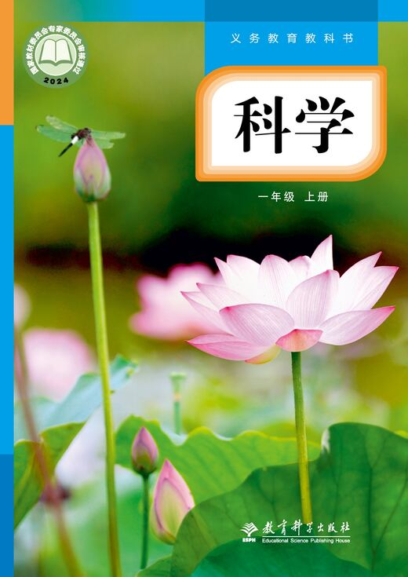
一年级上册暂无互动课件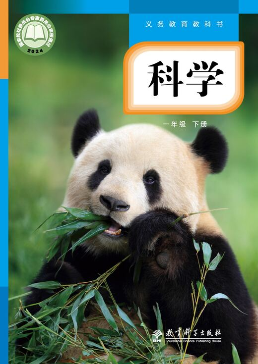
一年级下册暂无互动课件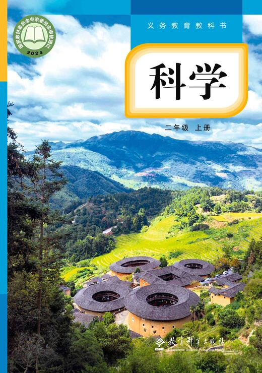
二年级上册暂无互动课件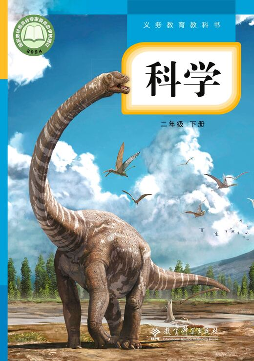
二年级下册暂无互动课件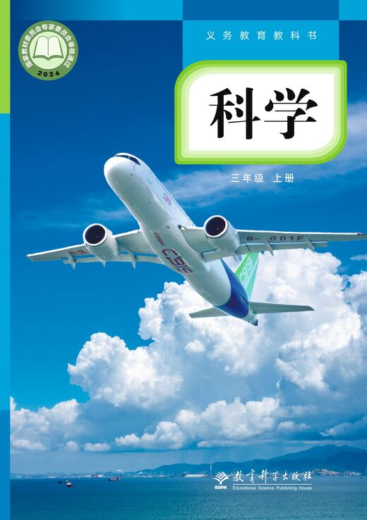
三年级上册已收录 9 节互动课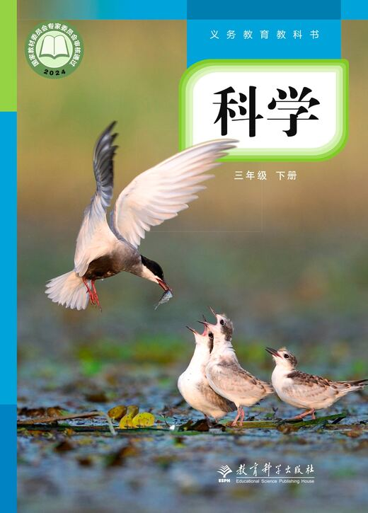
三年级下册已收录 1 节互动课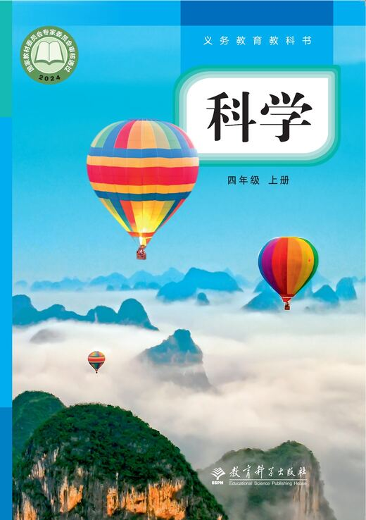
四年级上册已收录 1 节互动课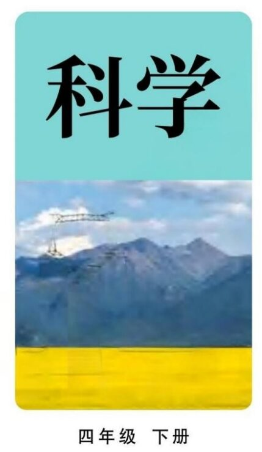
四年级下册暂无互动课件 五年级上册已收录 2 节互动课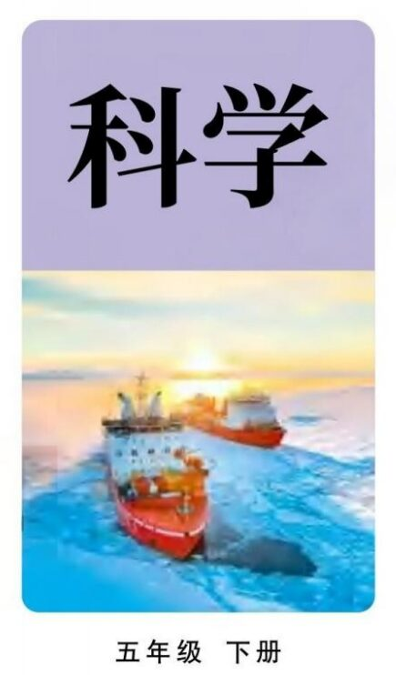
五年级下册已收录 1 节互动课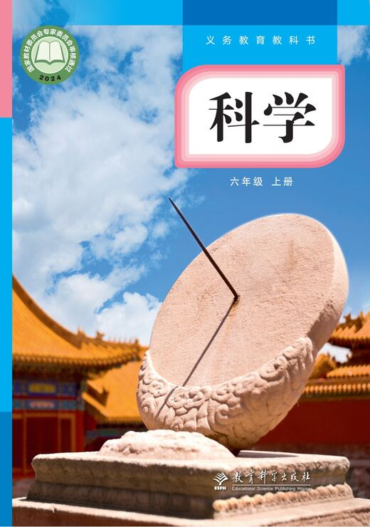
六年级上册暂无互动课件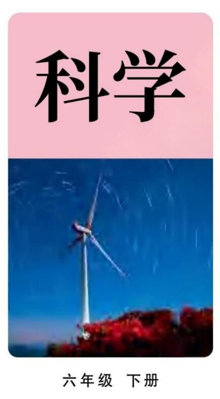
六年级下册暂无互动课件当前暂无互动课件
后续新增的作品将按单元和课次整理在这里。
当前暂无互动课件
后续新增的作品将按单元和课次整理在这里。
当前暂无互动课件
后续新增的作品将按单元和课次整理在这里。
当前暂无互动课件
后续新增的作品将按单元和课次整理在这里。
已收录 9 节互动课
模拟读数与气温计刻度放大，练习正确读取零上、零下的气温。
在雨量器实验台比较不同容器，模拟降水测量并观察雨量读数。
操作风向与风力模拟工具，练习观察、判断风向风力并记录依据。
模拟天空云量，认识典型云形，并记录云量和云的变化。
比较不同天气对职业、生活和动植物的影响，通过猜想、揭晓与冷热观察形成发现。
从生活情境寻找蒸发现象，完成实验预测、模拟观察与记录。
选择器材、模拟加热与观察沸腾现象，读取温度变化并绘制曲线。
控制搅拌、水温与颗粒大小，进行公平的对比实验，记录食盐溶解快慢。
相机录像、运动叠影与红点追踪，观察和比较物体不同位置的运动轨迹。
当前暂无互动课件
后续新增的作品将按单元和课次整理在这里。
当前暂无互动课件
后续新增的作品将按单元和课次整理在这里。
当前暂无互动课件
后续新增的作品将按单元和课次整理在这里。